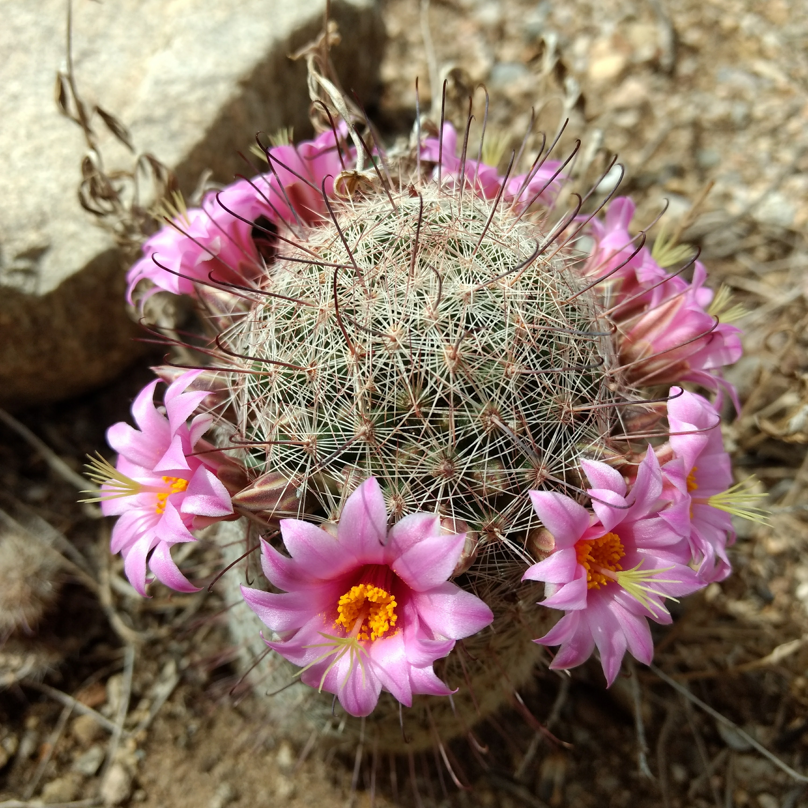
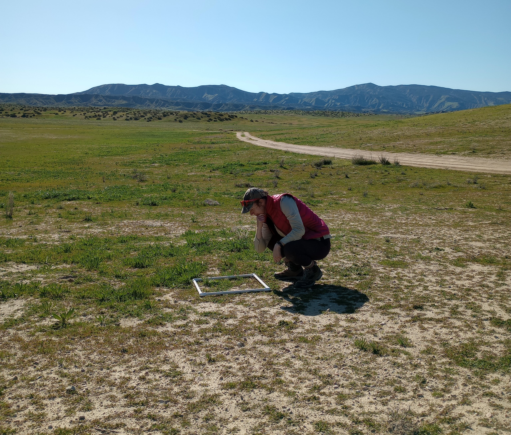
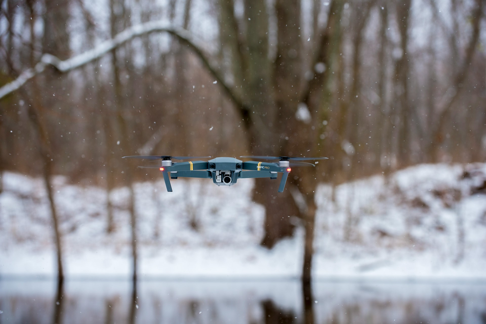
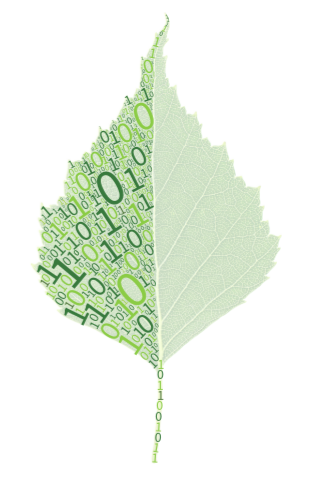
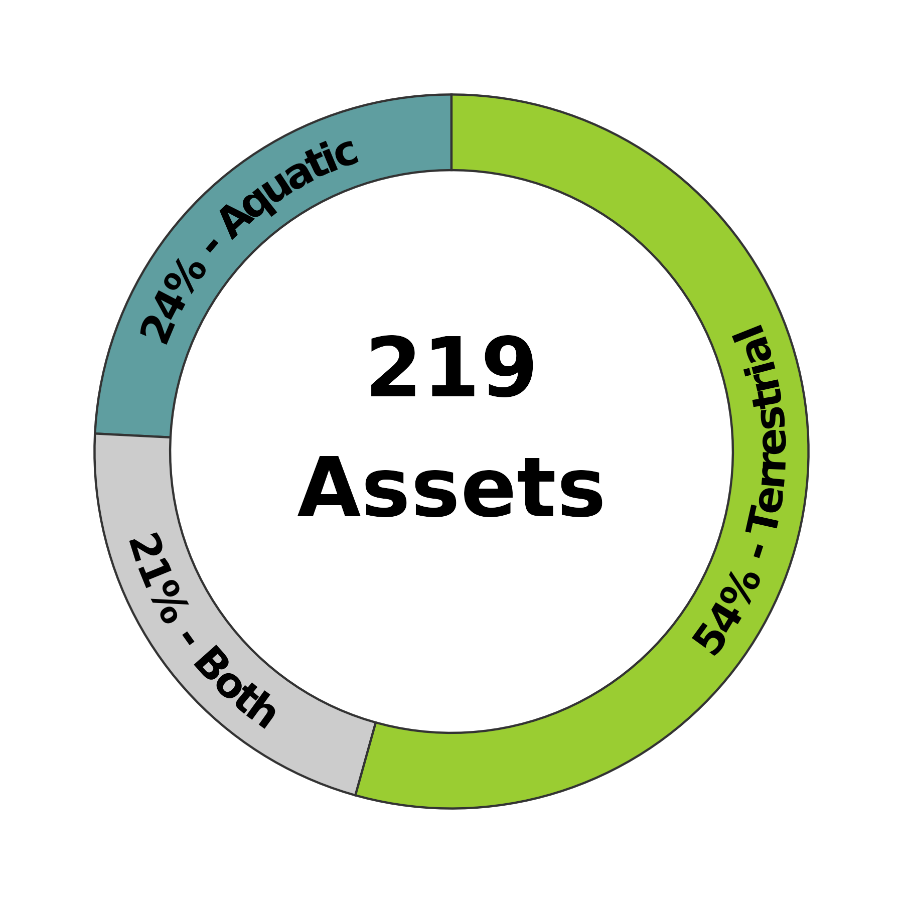
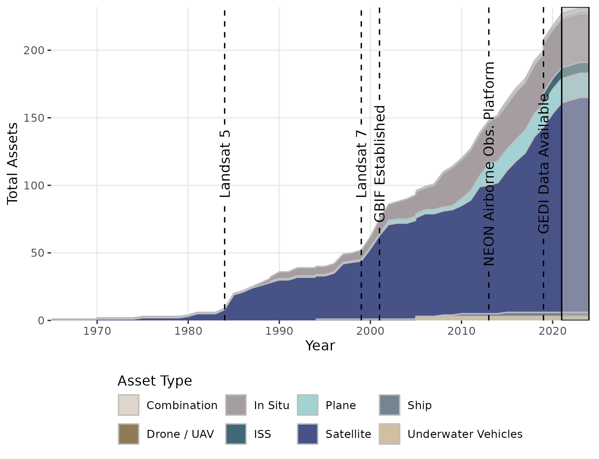
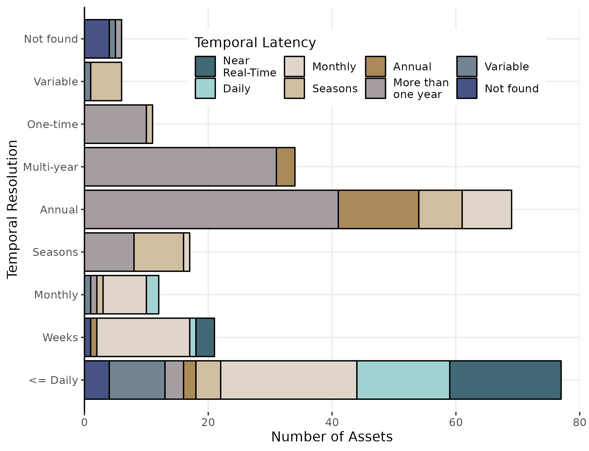
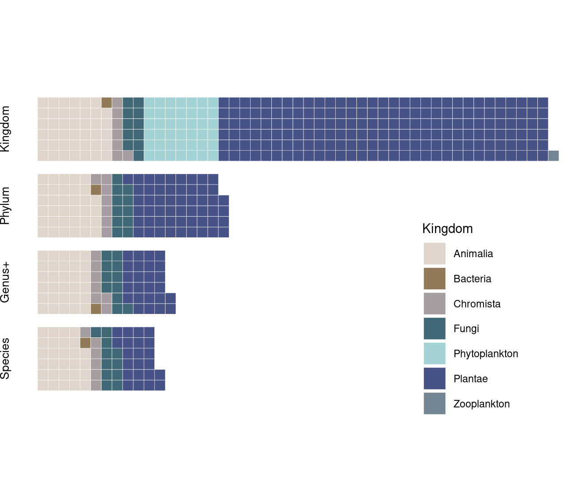
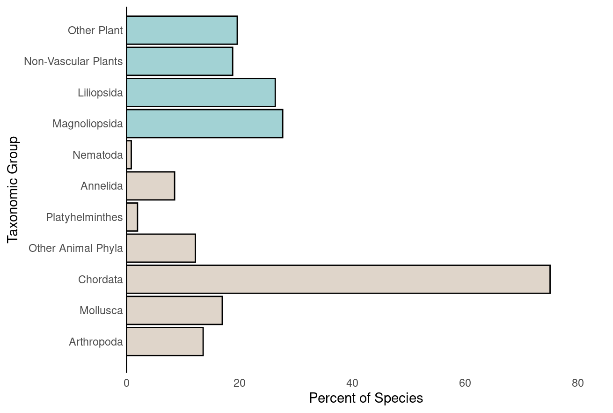

Digital Assets for Nature
Improving our understanding of the use of automated technology for global biodiversity monitoring.
Efforts to conserve biodiversity rely on effective monitoring to understand where and how fast biodiversity is changing and develop appropriate responses.

Current biodiversity assessments typically require time-intensive and costly field surveys that rarely match the pace of monitoring needs.

Automated biodiversity monitoring could increase the speed and accuracy of data collection, and thus improve the information available for decision making.
However, the extent of existing monitoring with these “digital assets” is not well characterized, which limits how and where current data can be used.

In our project Digital Assets for Nature, we identified and assessed existing digital assets that monitor biodiversity to improve our understanding of their current capacity to provide essential monitoring data.
We define Digital Assets as data products from automated data collection and processing systems. We focused on identifying digital assets that track the numbers, location, and changes in populations of living organisms as those are most relevant to biodiversity monitoring.
We use this assessment to identify key gaps in the current portfolio of digital assets and highlight opportunities to improve technology that would advance biodiversity monitoring by increasing digital assets.

We found that digital assets primarily come from satellite observations and monitor terrestrial systems at the community or ecosystem level.
Assets have been doubling roughly every 10 years, and diversifying as new infrastructure has been developed.
The temporal resolution of assets is typically higher than their latency, meaning there are substantial delays between data collection and data availability.
Over 50% of assets with daily or higher temporal resolution require more than a month to become available after observations were made, and the majority of assets (70%) with annual or multi-year resolution take more than a year to become available to potential users.
The taxonomic resolution of existing assets is extremely coarse and taxonomic coverage is heavily skewed towards monitoring primary producers. Roughly 81% of assets only identify organisms to Phylum or Kingdom, and 94% of those assets monitor plants or phytoplankton.
Of the major taxa examined, vertebrates (phylum Chordata) have the most complete coverage of species, with 76% of species having at least one digital asset.
In contrast, only 13% of arthropods species, the most speciose animal phylum, have a digital asset.




